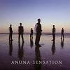

Celtic Lyrics Corner > Artists & Groups > Anúna > Sensation
|  |
Sensation
(2006) |
| Tracks : |
1.
O Ignis Spiritus
2. Brezairola 3. Sensation 4. Silver River 5. Shining Water 6. Lux Aeterna 7. The Road Of Passage 8. Whispers Of Paradise 9. Maid In The Moor Lay 10. Tenebrae IV 11. O Maria |